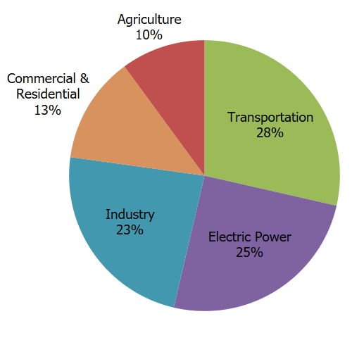

The USA released greenhouse gases equivalent to \(6.34*10^9\) metric tons of CO2 in 2021 [5.11.1.84]. Figure 5.10.1 shows where those emissions come from.

Figure5.10.1.Percentage of CO2 equivalent emissions in the USA by source in 2021 [5.11.1.84].
According to [5.11.1.81], global CO2 emissions were 37.1 billion tons in 2021. Write this number in scientific notation. If there were 7.8 billion people, how many tons of CO2 emissions would that be per person?
where the blank is filled in with your answer. Do you agree with these statements? Why or why not? What is the danger of using an average with a quantity like this
Repeat this exercise with just the US (2021 emissions: 5 billion tons, population 331.9 million people). Do these numbers have the same problems as the ones above? Explain.
The graph in Figure 5.10.2 uses data from [5.11.1.95] and shows the 20 corporations which have contritbuted most to global CO2 emissions. The graph gives the total emissions for each corporation from 1965-2018.
Figure5.10.2.Total emissions (1965-2018) for the 20 corporations which have contributed most to global CO2 emissions.
Use the graph and the table to find the four corporations listed from the US. How much have they contributed overall to CO2 emissions? Give your answer in scientific notation.
The change in atmostpheric CO2 due to land use. This can be positive or negative - if countries plant more trees, for example, that would reduce atmospheric CO2, while clearing land or changing how it is used can increase emissions.
Share of temperature change from greenhouse gas emissions. Certain changes or types of emissions can have larger effects on temperature change, so this may be different that then the percentage of CO2 emissions.
Use the data in the spreadsheet to answer these questions:
Create a graph of the total CO2 emissions of the 10 countries with the highest emissions in the list. What kind of graph did you choose to make and why?
Create a graph which shows the percentage share of CO2 that each continent or region (the continents/regions listed are Africa, Asia, Europe, North America, Oceania, and South America) has emitted. What kind of graph did you choose to make and why?
Taking all the countries with populations smaller than the USA, create a graph which shows the relationship between population and the percentage of CO2 emissions which the country is responsible for. What kind of graph did you choose and why? Does there seem to be a relationship between the size of the country and the percentage of CO2 emissions they’re responsible for.
What kind of data is the variable land_use_change_co2_per_capita, which gives the per capita CO2 emissions due to land use change for each country or region?
This variable gives the CO2 emissions from changes in land use, like clearing of land for agriculture or housing, open-pit mining, or elimination of wetlands. The values for per capita land use CO2 emissions range from -3.674 tons per person (Vanuatu) to 8.483 tons per person (Bhutan). Explain why you would need to use a histogram to display this data.
Create a frequency table using intervals of width 1 (\([-4,-3),[-3,-2),\ldots,[7,8),[8,9)\)) for per capita land use emissions from the countries listed in the data - you can omit continents, regions, and groupings of countries by income.
What does the histogram tell you? Are there a lot of countries with positive land use emissions per capita, or very few? Do most countries have positive or negative emissions per capita? What does this histogram tell you about how we should focus our efforts to reduce greenhouse gas emissions from land use?
We built our histogram for per capita land use change CO2 emissions. The table also has overall land use change CO2 emissions for each country (the land_use_change_co2 variable). Why is it easier to create a histogram for the land use per capita data than the overall land use CO2 emissions? Why is it more useful to use per capita data to understand patterns in emissions than overall land use CO2 totals?
gives the CO2 emissions (in millions of tons) and per capita CO2 emissions (in tons per person) for the USA for each year since 1800 [5.11.1.93]. Use the data to answer the following questions:
Create a graph of the CO2 emissions from 1800 to 2022. What kind of graph did you use and why?
Use the same kind of graph to graph the per capita CO2 emissions from 1800 to 2022. How are the patterns in the graph similar to those in Item 5.10.6.a? How are they different?
CO2 emissions rose steadily in the USA until 2005, with some notable exceptions. Look at the graphs and the data to find at least two periods where CO2 emissions dropped for multiple years in a row. What was going on in the USA when this occurred that could have caused the reduction in emissions?
Since 2005, CO2 emissions have fallen in the USA. Using your own research, list a few possible explanations for what has caused this reduction in emissions.
Use the data provided in Exercise 5.10.4 to create a graph for each of the following questions. Explain why you chose to create the graph that you did and how it helped you answer the question.
Are the continental regions which have contributed the most to cumulative global emissions the same ones that are currently contributing most to global emissions?
The mean annual global temperature anomaly gives the number of degrees Celsius that the mean global temperature differs from the mean temperature during the years 1901-2000. If the temperature in a year was exactly average for the 20th century, then the anomaly would be 0. If it is higher than the average for the 20th century, it will be greater than 0 - and less than 0 if it is lower.
Create a graph of the relationship between CO2 levels and the global temperature anomaly. Explain why you chose the graph you did. Does there appear to be a relationship between global CO2 levels and a rise in temperature?
From looking at the first graph in Figure 5.10.4, what conclusion might you draw about the relationship between CO2 levels and temperature? What about from the second graph in Figure 5.10.4?
These graphs - usually called dual axis charts are frequently used in misleading ways. Read more on your own about dual axis charts. Can they be used effectively, or do you think they are best avoided?
The data in Table 5.10.5 gives the percentage of newly registered vehicles in some European countries that are fully electric, plug-in hybrid, hybrid, gasoline, or diesel in 2019 (data from [5.11.1.96]).
Use the data in Table 5.10.5 to create a graph of the types of vehicles driven in Ireland. Why did you choose the type of graph you did? What does the graph tell you about the types of cars people drive in Ireland?
Use the data in Table 5.10.5 to create a graph of the percentages of vehicles which are electic, plug-in hybrid, or hybrid in each country,. Why did you choose the type of graph you did? What does the graph tell you about the usage of electric/hybrid cars across Europe?
Use the data in Table 5.10.5to create a graph which compares the types of vehicles driven in Norway and the United Kingdom. Why did you choose the type of graph you did? What does the graph tell you about the differences between Norway and the United Kingdom?
The data in Table 5.10.6 gives the percentage of newly registered vehicles in Norway that were fully electric, plug-in hybrid, hybrid, gasoline, or diesel from 2013 to 2019 (data from [5.11.1.96]).
Create a graph of the percentages of electric (fully electric, plug-in-hybrid, hybrid) and petroleum (gasoline, diesel) in Norway for each year from 2013 to 2019. Explain why you chose to graph them the way that you did.
Consider using the following prompts with generative AI, such as Chat GPT, to develop additional exercises for this material. These programs can also be used to generate solutions, but those solutions will not necessarily be correct! These prompts have been tested with ChatGPT [5.11.1.97].
Give me 5 questions that use examples from greenhouse gases, climate change, and global warming to teach students about using scientific notation and working with large numbers.